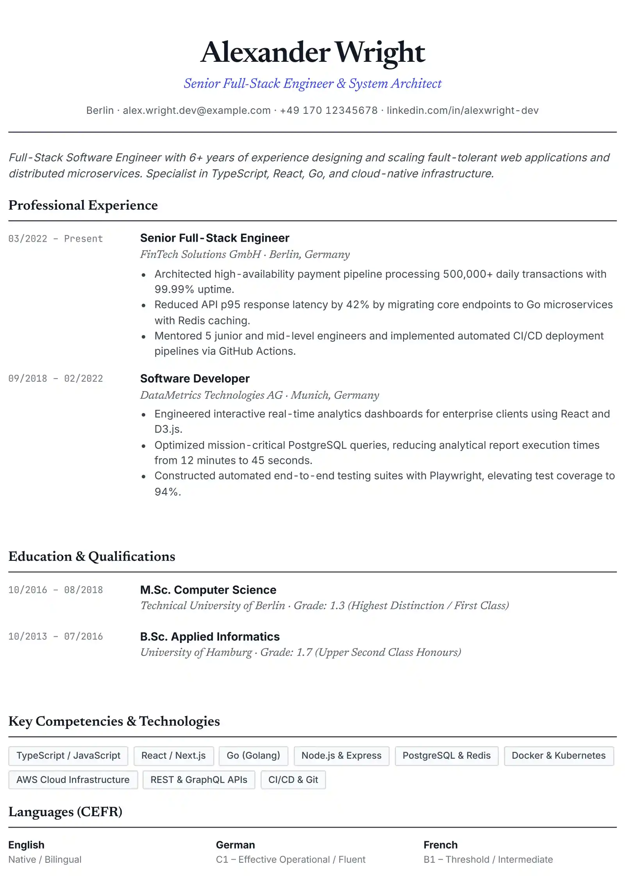
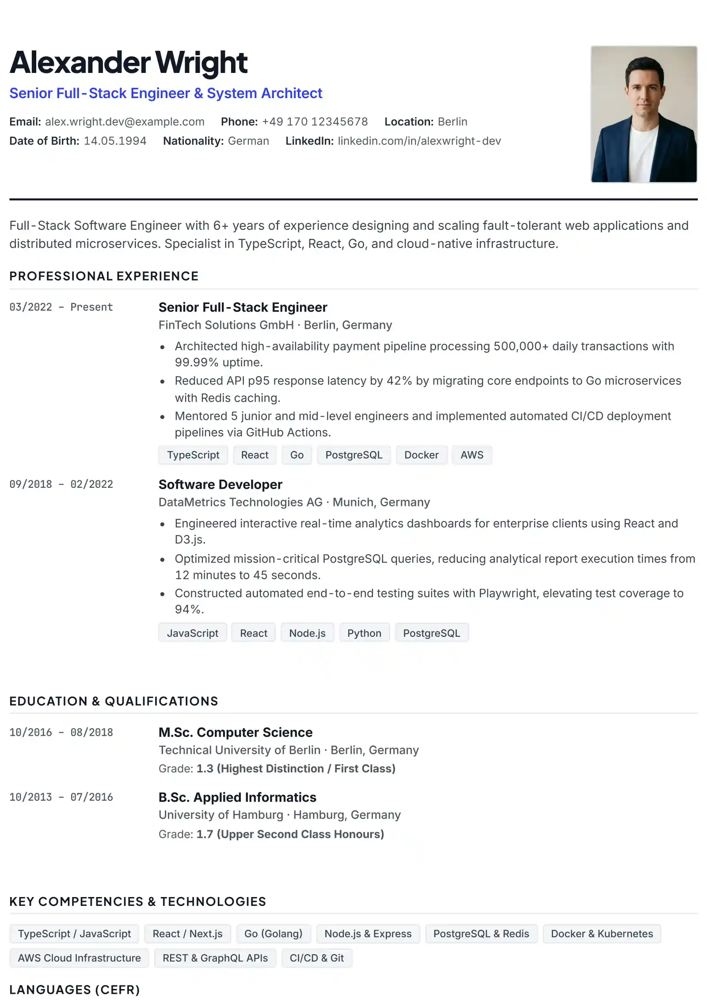
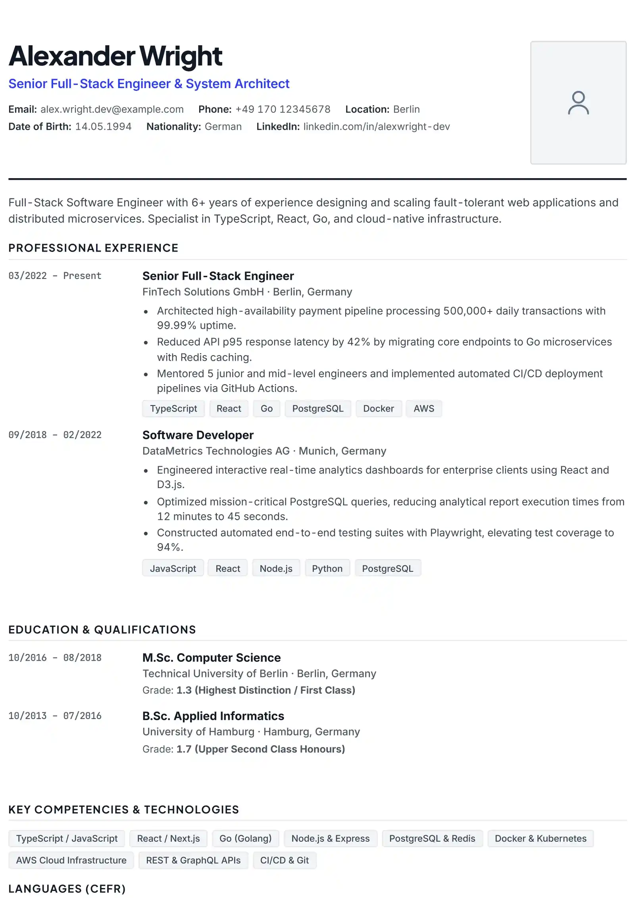
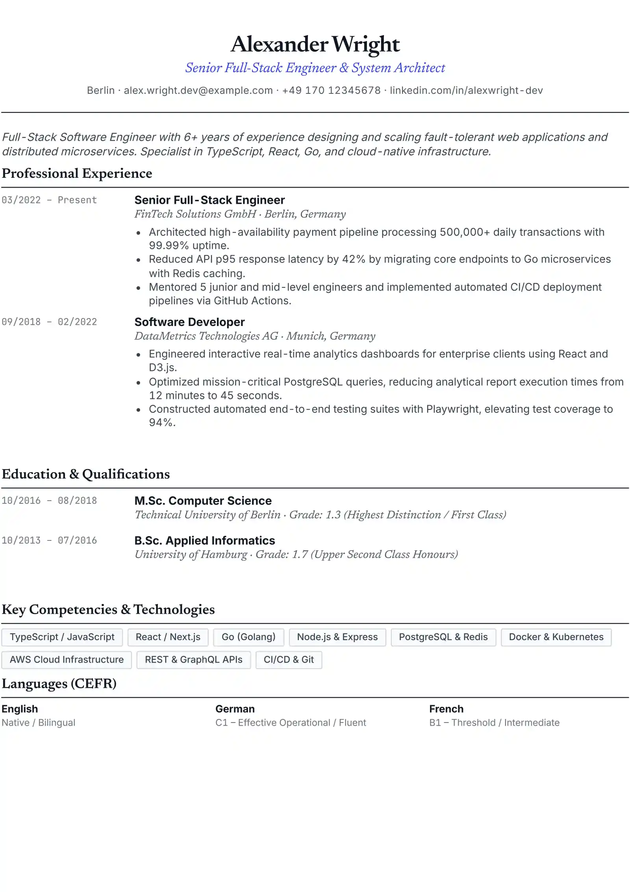
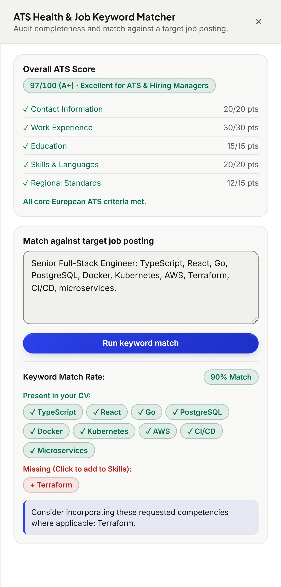

DE · UK · FR · NL
The CV that fits the country you’re applying to.
DIN 5008 for Germany, anti-bias for the UK, one page for France, direct for the Netherlands. Free, no signup, saved in your browser.
Headings in English, Deutsch & Français · CEFR language levels · Projects & certifications


Free
No signup
Saved locally in your browser
A4 PDF export
One person, four correct CVs
Each country reads a CV differently.
Switch your target market and the studio adapts photo rules, personal details, section headings (English, Deutsch, or Français), and closing blocks to match local hiring norms.
Germany / DACH: DIN 5008 standard supporting candidate portrait photo, date of birth, nationality, and formal closing signature block.
UK & Ireland: Equality Act anti-bias format that automatically removes photo, birth date, nationality, and signature block, renaming experience to Employment History.
France: Compact one-page executive layout with optional photo, clear CEFR language tiers, and concise reverse-chronological focus.
Netherlands / Benelux: Direct, achievement-oriented layout highlighting measurable impact metrics, technical skills, and structured language proficiency.




A4 Layouts & Density
Three layouts. Compact, Standard, or Spacious.
Each layout is engineered on a strict 210×297mm A4 canvas with the Ultramarine ink palette, CEFR language tiers, and optional Projects and Certifications sections.
Built for international candidates
From local graduates to relocating engineers across DACH, UK, France, and Benelux.

Sample CV · Alexander Wright
97/100
TypeScript
React
Go
PostgreSQL
Docker
AWS
CI/CD
+ Terraform
ATS Health & Job Match
Check your CV against the job posting before you apply.
The built-in ATS Health engine scores contact completeness, action verbs, quantified results, technical skills, CEFR languages, and regional compliance in real time.
- Paste any target job description to compare matched vs. missing technical keywords.
- Add missing competencies straight into your skills list in one click.
- Spot unquantified bullets with the inline Impact Coach before exporting.
How it works
Three calm steps to an A4 PDF.
01
Choose your market
Select Germany/DACH, UK & Ireland, France, or Netherlands, plus English, Deutsch, or Français headings.
02
Fill it in, or load the sample
Start guided from a blank page, explore the built-in sample CV, or import an existing JSON backup.
03
Download your PDF
Auto-fit to one page if needed, verify your ATS health, and print a selectable-text A4 PDF directly from your browser.
Local-first privacy
No account. Your CV stays in your browser.
There is no backend database and no account wall. Edits save automatically to your browser’s localStorage, and you can export or import a JSON backup file at any time.
Questions
Common questions before you start.
Do I need a photo?
It depends on the country. A portrait photo is customary in Germany and Austria (DIN 5008), optional in France and the Netherlands, and omitted in the UK and Ireland under Equality Act anti-bias guidelines.
What is DIN 5008?
DIN 5008 is the German standard for structured business layouts. In European CV Studio, the Frankfurt layout uses DIN 5008’s asymmetric date column, structured personal header, and optional closing place, date, and signature block.
Is it free?
Yes. Every layout, market preset, ATS score check, keyword matcher, and PDF export runs free in your browser with no signup.
How do I keep my CV safe?
Your CV is saved locally in your browser’s localStorage on this domain. For portability across devices or browsers, click New / Import inside the studio to download or restore a JSON backup.
Will it fit on one page?
The live Page Fit bar measures A4 page usage as you type. You can switch between Compact, Standard, and Spacious density or click Auto-fit 1 page whenever a draft spills slightly onto page two.
Ready to print your A4 CV?
Open the studio, pick your market, and export a clean selectable-text PDF.